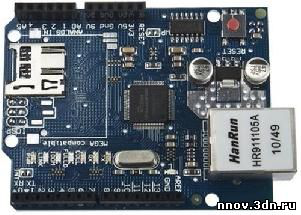

Скетч универсального web-сервера с файлами на SD карте. Ethernet Shield W5100
|
Универсальный web - сервер на Arduino
Этот сервер хранит HTML файлы и рисунки на SD - карте. Для его функционирования необходим Ethernet Shield W5100 (схема) , который устанавливается с помощью разъемов на контроллере Arduino.
 Рис.1. Arduino Ethernet Shield W5100
Arduino Ethernet Shield позволяет подключить плату Arduino к сети. Она основана на Ethernet –микросхеме Wiznet W5100. Wiznet W5100 поддерживает стеки TCP/IP and UDP в IP-сети. Он поддерживает до четырёх одновременных подключений к сокетам. Для создания скетчей (программ), которые подключают Arduino к сети при помощи данной платы, используется библиотека Ethernet. Данная плата соединяется с платой Arduino при помощи длинных штырьков, проходящих через неё. Это позволяет не изменять расположение выводов и устанавливать другие платы поверх неё. Плата Ethernet Shield имеет стандартный разём RJ-45. Последние версии платы имеют разъём для карт типа micro-SD, которые могут использоваться для хранения файлов и работы с ними по сети. Плата совместима также с Arduino Uno и Mega (при использовании библиотеки Ethernet library). Разъем microSD доступен при помощи библиотеки SD Library. При применении этой библиотеки вывод 4 Arduino используется для сигнала SS (Slave Select). Последние версии платы имеют улучшенный сброс, что позволяет быть уверенным в перезапуске W5100 после включения. Предыдущие версии платы были не совместимы с Arduino Mega и требовали также ручного сброса после включения путем нажатия на клавишу RESET. При подключении компьютера через адаптер FTDI-USB, Arduino и Ethernet Shield получают питание от адаптера. Arduino осуществляет связь с W5100 и картой SD посредством шины SPI (через разъём ICSP header). Эта шина расположена на выводах 11, 12, и 13 платы Arduino UNO и выводах 50, 51, и 52 Arduino Mega. На обеих платах вывод № 10 используется для выбора W5100, а ввод № 4 - для карты SD. Эти выводы не могут быть использованы для другого ввода-вывода. На плате Mega, аппаратный вывод SS № 53 не используется для выбора ни W5100, ни карты SD, но он должен быть сконфигурирован на вывод, иначе интерфейс SPI может не работать. Микросхема W5100 и карта SD разделяют шину SPI, поэтому одновременно они работать не могут. Если используются оба этих периферийных устройства в программе, следует использовать соответствующие им библиотеки. Если не используется ни одно из этих периферийных устройств, следует явно отключить их. Чтобы сделать это, необходимо сконфигурировать вывод платы № 4 для SD как выход и записать в него "1". Для W5100 необходимо установить на выводе № 10 также "1".
Ниже представлен текст программы универсального web-сервера #include <SPI.h> #include <Ethernet.h> #include <SD.h> byte mac[] = {0xDE, 0xAD, 0xBE, 0xEF, 0xFE, 0xED }; IPAddress ip(192,168,1,100); char rootFileName[] = "index.htm"; EthernetServer server(80); File myFile;
void setup() { SD.begin(4); Serial.begin(9600); Serial.println("Free RAM: "); Serial.println(FreeRam()); pinMode(10, OUTPUT); // установить SS вывод как выходящий digitalWrite(10, HIGH); // Выключить чип w5100 // Запускаем сервер. По умолчанию шлюз выбран 192.168.1.1, маска 255.255.255.0 Ethernet.begin(mac, ip); server.begin(); } // Выбираем размер буфера 100 символов, где находится имя файла. #define BUFSIZ 100 void loop() { char clientline[BUFSIZ]; char *filename; int index = 0; EthernetClient client = server.available(); if (client) { // an http request ends with a blank line boolean current_line_is_blank = true; // reset the input buffer index = 0; while (client.connected()) { if (client.available()) { char c = client.read(); // Сбросить соединение, если пришел непонятный символ от клиента. //Например, наблюдались зависания от браузера // Safary (IPad 2), который посылал "непонятные" символы if ( c==0x0A || c==0x0D ) goto aa; if ( c<0x20 || c>0x7E ) break; aa: // Если символ от клиента правильный, записываем его в буфер // Если идет чтение не новой строки, то продолжаем ее символы записывать в буфер. if (c != '\n' && c != '\r') { clientline[index] = c; index++; // Идем на продолжение считывать новый символ. continue; } // Заканчиваем строку символом 0, если следующая строка новая (получили \n или \r ) clientline[index] = 0; filename = 0; // Распечатываем прочитанную строку. Serial.println(clientline); // Look for substring such as a request to get the root file if (strstr(clientline, "GET / ") != 0) { filename = rootFileName; } if (strstr(clientline, "GET /") != 0) { // this time no space after the /, so a sub-file if (!filename) filename = clientline + 5; // look after the "GET /" (5 chars) // a little trick, look for the " HTTP/1.1" string and // turn the first character of the substring into a 0 to clear it out. (strstr(clientline, " HTTP"))[0] = 0; // print the file we want Serial.println(filename); myFile = SD.open(filename); if (!myFile ) { client.println("HTTP/1.1 404 Not Found"); client.println("Content-Type: text/html"); client.println(); client.println("<h2>File Not Found!</h2>"); break; } Serial.println("Opened!"); client.println("HTTP/1.1 200 OK"); if (strstr(filename, ".htm") != 0) client.println("Content-Type: text/html"); else if (strstr(filename, ".css") != 0) client.println("Content-Type: text/css"); else if (strstr(filename, ".png") != 0) client.println("Content-Type: image/png"); else if (strstr(filename, ".jpg") != 0) client.println("Content-Type: image/jpeg"); else if (strstr(filename, ".gif") != 0) client.println("Content-Type: image/gif"); else if (strstr(filename, ".3gp") != 0) client.println("Content-Type: video/mpeg"); else if (strstr(filename, ".pdf") != 0) client.println("Content-Type: application/pdf"); else if (strstr(filename, ".js") != 0) client.println("Content-Type: application/x-javascript"); else if (strstr(filename, ".xml") != 0) client.println("Content-Type: application/xml"); else client.println("Content-Type: text"); client.println(); byte cB[64]; int cC=0; while (myFile.available()) { cB[cC]=myFile.read(); cC++; if(cC > 63) { client.write(cB,64); cC=0; } } if(cC > 0) client.write(cB,cC); myFile.close(); } else { // everything else is a 404 client.println("HTTP/1.1 404 Not Found"); client.println("Content-Type: text/html"); client.println(); client.println("<h2>File Not Found!</h2>"); } break; } } // give the web browser time to receive the data delay(1); client.stop(); } } Необходимо учитывать следующее. Веб - сервер на Arduino не использует многопользовательскую мультипрограммную операционную систему. Поэтому при обращении одного клиента передача данных будет идти только к нему. Второй клиент начнет получать данные только после закрытия соединения с первым клиентом. Поэтому большая HTML страница должна быть разбита на маленькие, которые быстро загружаются и сервер закрывает соединение. Благодаря этому может появиться возможность обращению к серверу 2-3 клиентов почти одновременно. Примерно через 10-15 минут интенсивного обращения к серверу он зависает (по опыту виснет Ethernet Shield W5100). | |
|
Просмотров: 7660 | Рейтинг: 0.0/0 |
|
Всего комментариев: 0 |